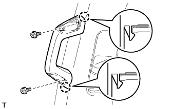

FRONT SEAT OUTER BELT ASSEMBLY > REMOVAL |
| 1. DISCONNECT CABLE FROM NEGATIVE BATTERY TERMINAL |
| Condition | Waiting Time |
| Vehicle enrolled in G-BOOK system | 6 minutes |
| Vehicle not enrolled in G-BOOK system | 1 minute |
| 2. REMOVE DOOR SCUFF PLATE ASSEMBLY LH |
 |
Put protective tape around the door scuff plate.
| *1 | Protective Tape |
Using a screwdriver, detach the 4 clips, 10 claws and 2 guides.
Disconnect the connector and remove the door scuff plate.
| 3. REMOVE FRONT DOOR OPENING TRIM WEATHERSTRIP LH |
Partially remove the front door opening trim weatherstrip so that the lower center pillar garnish and center pillar garnish can be removed (Click here).
| 4. REMOVE REAR NO. 1 FLOOR STEP COVER |
 |
Using a screwdriver, detach the 2 claws and remove the rear No. 1 floor step cover.
| *1 | Protective Tape |
| 5. REMOVE QUARTER SCUFF PLATE LH |
 |
Remove the 2 bolts and quarter scuff plate.
| 6. REMOVE REAR DOOR SCUFF PLATE LH |
 |
Put protective tape around the rear door scuff plate.
Using a screwdriver, detach the 3 clips, 6 claws and 2 guides and remove the rear door scuff plate.
| *1 | Protective Tape |
| 7. REMOVE REAR DOOR OPENING TRIM WEATHERSTRIP LH |
Partially remove the rear door opening trim weatherstrip so that the lower center pillar garnish and center pillar garnish can be removed (Click here).
| 8. REMOVE OUTER LAP BELT ANCHOR COVER |
 |
Detach the 3 claws and remove the outer lap belt anchor cover.
| 9. REMOVE LOWER CENTER PILLAR GARNISH LH |
 |
Remove the bolt and disconnect the front seat outer belt floor anchor.
 |
Detach the 4 claws and 2 clips and remove the lower center pillar garnish.
| 10. REMOVE NO. 2 ASSIST GRIP PLUG LH |
 |
Using a screwdriver, detach the 2 claws and remove the front No. 2 assist grip plug.
| *1 | Protective Tape |
| 11. REMOVE NO. 2 ASSIST GRIP LH |
|  |
Remove the 2 bolts.
Detach the 2 claws and remove the No. 2 assist grip.
| 12. REMOVE CENTER PILLAR GARNISH LH |
 |
Move the front shoulder belt anchor adjuster to the lowest position.
Remove the bolt.
Detach the 2 clips and 2 guides.
Pass the front seat outer belt floor anchor through the center pillar garnish and remove the center pillar garnish.
| 13. REMOVE FRONT SEAT OUTER BELT ASSEMBLY |
 |
Remove the nut and shoulder anchor.
Disconnect the pretensioner connector labeled A as shown in the illustration.
Disconnect the tension reducer connector labeled B.
w/ Pre-crash Safety System:
Disconnect the pre-crash safety system connector labeled C.
 |
Remove the bolt and seat belt.
| 14. REMOVE FRONT SHOULDER BELT ANCHOR ADJUSTER ASSEMBLY |
 |
Remove the 2 bolts and anchor adjuster.